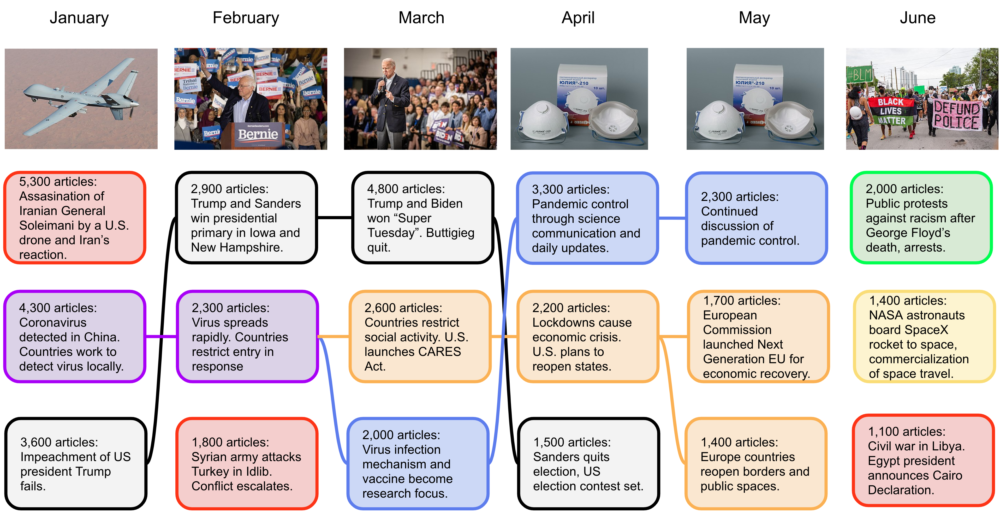
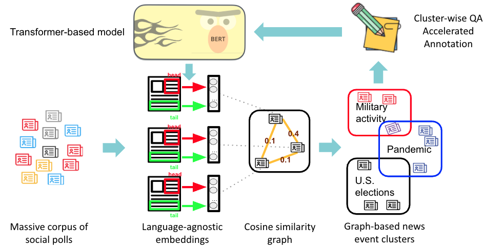

• Amazon AGI foundation, Seattle, WA. 2024.7-2024.10
 |
Merged large language models by adaptive aligning activation to accelerate online multi-task learning. |
Experience
• Amazon AGI foundation, Seattle, WA. 2024.7-2024.10
|
Merged large language models by adaptive aligning activation to accelerate online multi-task learning. |
• Univeristy of Masssachusetts Amherst, Amherst, MA. 2019.9-2025.6
|  | Modeling multilingual international news diversity and synchrony at global scope. [Paper] | |||
 |
Generating Question-answers on large language model to extract Global Disasters. [Paper] [Masslive Coverage] | |||
|  | Enhancing event discovery via LLM-iterative, cluster-wise data generation on social polls. | |||
 |
Developing a super large multilingual news frame dataset across media bias levels by human-in-the-loop active learning. [Paper1] [Paper2] |
• Univeristy of Californi Los Angeles, California, USA. 2018.7-2018.12
| Modeled personalized dynamics of social network and opinion, and predicted evolution. [Paper] |
• Zhipu AI (Tsinghua University), Beijing, China. 2018.3-2018.9
 |
Adaptively collected heterogeneous funding and matched to scholars with decision tree (Aminer online). | |||
 |
Predicted technology evolution with genetically clustering. [Code] |
• Hunan University, Hunan, China. 2017.3-2017.5
 |
Investigated data visualization field in terms of typical techniques, libraries, softwares, research progress, and open problems. [ Survey ] |
• Central South University, Hunan, China. 2016.3-2017.7
 |
Devised epidemic routing for vehicular networks with taxi trajectory dataset from MSRA. [ Paper ] | |||
 |
Devised robust and efficient communication for mobile body area network. [ Paper ] | |||
 |
Devised adaptive energy equilibrium for e-health network. [ Paper ] |
• Briup Technology corporation, Jiangsu, China. 2017.6-2017.7
 |
Developed a smart traffic system on sand table as to route optimization, navigation guidance, driving laws, obstacle avoidance, and flow regulation (server, client, and hardware). |
• Central South University, Hunan, China. 2015.7-2015.8
 |
Recognized Chinese speech of surgical terms with Kinect. Built GUI to Visualize objects and actions in voice-activated surgery simulation with DirectUI library. |